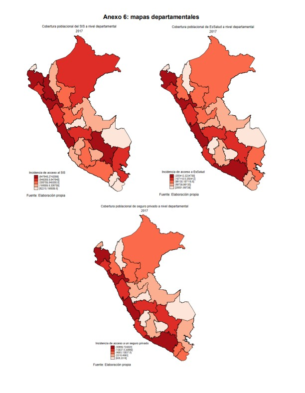

Jesús Alberto Nicho Rosado
I'm Designer
About me
Bachelor's degree in Economics from PUCP, currently in my final year, with a focus on microeconomics and data science. Recognized for my analytical skills, problem-solving abilities, and commitment to excellence in coursework and research. I have developed advanced proficiency in data analysis and programming, utilizing tools such as Python, R, Excel, Power BI, SQL, and GitHub to analyze economic models, create financial reports, and conduct quantitative research. My professional interests are centered around finance, macroeconomics, and data science, with a particular focus on financial markets, investment analysis, and the practical application of economic theory. I have been honored to receive two prestigious scholarships: the Beca Continuidad de Estudios from Pronabec, which supports my academic journey, and a scholarship in Applied Microeconomics and Social Sciences from QLab PUCP, where I continue to expand my knowledge in advanced economic analysis and research.
Economics Bachelor & Data Scientist
I am #OpenToWork via my Linkedin page. Please, contact me through my e-mail or phone number for professional oportunities and academic projects in quantitative finance, capital markets and Machine Learning models.
- Birthday: 9 Apr 2020
- Phone: +51 917 056 909
- City: Lima, Perú
- Age: 25
- Degree: Bachelor
- Email: a20176035@pucp.edu.pe
____________________________________________________________________________________________________________
years of Experience in Research
Projects in GitHub
Skills
I possess strong expertise in key tools for data analysis and strategic decision-making. My experience includes advanced proficiency in Microsoft Excel for managing large volumes of data, creating interactive dashboards in Power BI, and using SQL for efficient querying and management of databases. Additionally, I have knowledge in econometric analysis, enabling me to apply statistical methods to model and forecast economic and social trends. These skills allow me to generate valuable insights and data-driven solutions.
Resume
An overview of my academic training and professional experience, including internships, research assistance, and specialized courses in economics, finance, and data science.
Sumary
Jesús Nicho
Innovative and deadline-driven Economics graduate with 2+ years of experience in quantitative academic research, interested in Data Analysis, Python, Machine Learning, Business Analytics. I’m looking to collaborate on Data Analytics / Data Science projects.
- Str. Teniente Diego Ferré 401, San Miguel, Lima
- (+51) 917056909
- a20176035@pucp.edu.pe
Education
Master Courses
2024
Pontifical Catholic University of Peru, Lima, PE
Applied Advanced Econometrics Prof. Pavel Coronado & Angelo Cozzubo & Cristina Tello‑Trillo & Cesar Mora & Juan Manuel del Pozo & Minoru Higa
Fundamentals of Programming in Python Prof. Carla Solis
Introduction to Machine Learning for Social Sciences and Public Management Prof. Pavel Coronado
Prompt Engineering Prof. Alexander Quispe
Bachelor of Economics
2019 - 2024
Pontifical Catholic University of Peru, Lima, PE
Advisor: M.Sc. Alexander Quispe Rojas
Specialization: Quantitative Economics
Professional Experience
Investment Intern - Pontifical Catholic University of Peru
January 2025 – August 2025
Lima, Peru
- Supported database modeling and prepared management and performance reports on processes for authorities and internal departments.
- Updated guidelines, procedures, and manuals related to the Investment Management System, incorporating best practices and user feedback.
- Provided assistance and training to end-users on the Investment Management System, addressing questions and facilitating the adoption of improvements.
Research Assistant - Pontifical Catholic University of Peru
October 2024 – Present
Lima, Peru
- Worked closely with Professor Alexander Quispe in organizing and preparing materials for academic presentations and seminars.
- Published reports and executive summaries of findings on GitHub repositories, contributing to documentation and dissemination of research results.
- Conducted data analysis for various studies, applying Python and Stata libraries and statistical methods to derive meaningful conclusions.
Finance Intern - RS Investments S.A.C.
September 2024 – December 2024
Lima, Peru
- Prepared financial reports using tools such as the SIRE system, consolidating key information for strategic decision-making.
- Implemented an automated alert system for loan monitoring, reducing default risk by 15%.
- Designed the annual budget based on financial data analysis, improving resource allocation efficiency by 10%.
- Created interactive Power BI dashboards to visualize critical financial metrics, enhancing result presentations for managers.
Portfolio
A selection of projects showcasing my experience in data analysis, research, and applied economics.
- All
- Data Analytics
{kind=link}
Determinants of School Dropout in 2021
The study analyzes the determinants of school dropout in Peru’s Basic Education during 2020–2021, highlighting the impact of the pandemic and connectivity gaps. Using data from ENAHO and a logit model, it was found that variables such as age, type of school, and employment status influence school continuity, while factors such as social programs, internet access, and COVID-19 vaccination showed negative effects on enrollment, although the mother’s education reduces the likelihood of dropping out. The results show that dropout is linked to socioeconomic and structural conditions (poverty, inequality, rurality), which calls for more effective public policies.
{kind=link}

Access to Health Insurance in Peru (2017)
The document analyzes health insurance coverage in Peru during 2017 using data from the National Population and Housing Census conducted by INEI. Findings show that 75.47% of the population was affiliated with some form of health insurance, with the SIS being the most widespread (especially in rural areas due to its focus on poverty), followed by EsSalud, which has lower coverage because of its contributory nature and the country’s high labor informality. Private insurance and other schemes (such as those for the Armed Forces or police) had very limited participation, while 24.53% of the population had no insurance. The geographical analysis revealed significant disparities: Lima, Piura, and La Libertad showed the highest coverage, whereas regions like Madre de Dios and Moquegua lagged behind. The study concludes that although overall coverage is relatively high, there remain urban-rural and socioeconomic gaps, highlighting the need for public policies that strengthen EsSalud, expand access to private insurance, and reduce the proportion of Peruvians without health coverage.
{kind=link}
Services
I offer a range of professional services designed to combine strong analytical skills with practical economic insights. From data-driven research and financial planning to policy consulting and advanced applications of machine learning, my goal is to deliver solutions that create real value for organizations, businesses, and individuals.
Economic Data Analysis
Statistical and econometric tools to evaluate economic, financial, and market trends.
Public Policy Consulting
Advisory on the design, evaluation, and implementation of economic and social policies.
Financial and Budget Planning
Strategies for organizations or individuals to optimize financial resources and planning.
Academic & Market Research
Development of applied research, impact assessments, and data-driven reports.
Machine Learning for Economics
Predictive models and AI applied to economic forecasting and risk analysis.
Training & Workshops
Courses and workshops on applied economics, data analysis, and Python for economics.
Contact
My contact information is below. Please, feel free to drop me a line.
Address
Str. Teniente Diego Ferré 401, San Miguel, Lima
Call me
+51 917 056 909
Email me
a20176035@pucp.edu.pe